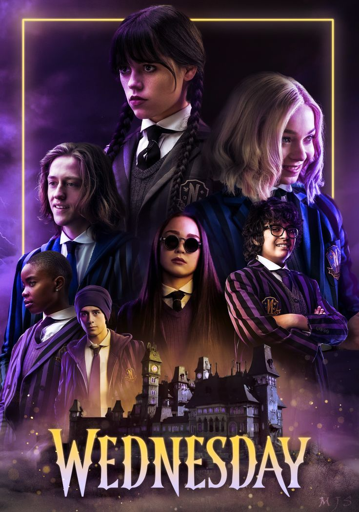

•Wednesday Addams is expelled from her school after dumping live piranhas into the school's pool in retaliation for the boys' water polo team bullying her brother Pugsley. Consequently, her parents Gomez and Morticia Addams enroll her at their high school alma mater Nevermore Academy, a private school for monstrous outcasts, in the town of Jericho, Vermont. Wednesday's cold, emotionless personality and her defiant nature make it difficult for her to connect with her schoolmates and cause her to run afoul of the school's principal Larissa Weems. However, she discovers she has inherited her mother's psychic abilities which allow her to solve a local murder mystery.
•Burton was previously approached to direct the 1991 film and was involved with a cancelled stop-motion animated The Addams Family film.During pre-production on The Addams Family (1991), Tim Burton was approached to direct, but ended up passing on it due to scheduling conflicts with Batman and Batman Returns, resulting in Barry Sonnenfeld taking the job.In March 2010, it was announced that Illumination Entertainment had acquired the underlying rights to the Addams Family drawings

Wednesday Addams, a high-school student, finds her brother Pugsley tied up in a locker. She sees a psychic vision of his bullies whom she attempts to kill, resulting in her expulsion. Her parents, Morticia and Gomez, decide to enroll her in Nevermore Academy, a school for outcasts in Jericho, Vermont. Meanwhile, a hiker is killed by an unknown creature near Nevermore. Wednesday's parents release Thing, a sentient disembodied hand, to watch over her. She meets her roommate Enid, her complete opposite, and duels with Bianca, the popular girl, after Bianca bullies a boy named Rowan. Later, Wednesday is nearly killed by a falling gargoyle but is saved by Bianca's ex-boyfriend, Xavier. After escaping her court-ordered therapy session, Wednesday meets Tyler, a coffee barista who agrees to help her escape from Nevermore. However, she is apprehended by Principal Larissa Weems and taken back to the school. Later, Tyler and Wednesday meet at the local carnival, and Wednesday has a vision of Rowan's death. Rowan attempts to kill her but is murdered by the monster.

Wednesday convinces a skeptical Sheriff Galpin that the perpetrator of the murders is in fact a monster. Suddenly, Rowan reappears unharmed. Wednesday doubts her sanity and decides to investigate the murders herself. She roams the campus inquiring about Rowan, and is told that he has been expelled. Meanwhile, Weems grows worried about Wednesday's visions, keeping close tabs on her. Wednesday confronts a defensive Rowan as he leaves the school and sends Thing to follow him. Rowan is revealed to be Principal Weems, who has shapeshifted into him, and Thing loses her. Wednesday has visions of a book belonging to an old students' society. In her search for the book, she overhears Bianca planning to rig the upcoming student tournament. Wednesday joins Enid to defeat Bianca and win the tournament. Later, Wednesday discovers a hidden library within the school, where she is captured.

Wednesday finds herself tied up and surrounded by members of an elite students' society, including Bianca and Xavier. Wednesday frees herself and leaves the library, taking one of the books with her. Weems orders Wednesday to play in the school's band at an upcoming town ceremony run by Mayor Noble Walker. A drawing in the book leads her to an exhibition at a local fair, where she notices the painting of a girl she had seen in her visions. In the forest, Wednesday envisions the girl—believed to be an ancestor of hers—ready to be executed by Joseph Crackstone, the town's founder who is intent on killing all outcasts, but she is able to escape. Wednesday is ambushed by the monster, which she discovers to be human. Back in town, Wednesday crashes the ceremony by having Thing destroy an inaugural statue of Joseph Crackstone and is scolded by Principal Weems. While investigating a crime scene in the forest, police find a camera that captured photographs of the monster.

Wednesday and Thing break into the coroner's office to copy the files of the monster's victims. In trying to identify a pattern, she finds that each victim has had body parts surgically removed. Wednesday becomes suspicious of Xavier and follows him into his art studio, where she discovers several drawings of the monster, which lead her to the monster's lair. There, she retrieves one of its claws and gives it to Sheriff Galpin for DNA matching. Wednesday and Tyler attend a school dance together. Meanwhile, classmate Eugene, who is privy to Wednesday's investigative work, witnesses a cloaked figure blow up the monster's cave. The dance is interrupted by Mayor Walker's son, Lucas, who triggers the building's fire sprinklers in revenge for Wednesday's disruption of the town ceremony. Wednesday senses that Eugene is in danger and heads into the forest, only to find him gravely injured by the monster.

32 years earlier, Gomez Addams was arrested at Nevermore on suspicion of killing Garrett Gates, a descendant of Joseph Crackstone. In present time, the Addamses visit Wednesday on Parents' Weekend at Nevermore. A family therapy session is cut short when Wednesday confronts her parents about the suspected murder. Meanwhile, Sheriff Galpin learns that the coroner committed suicide after admitting to fabricating Gates's autopsy report. Galpin concludes that Gomez is guilty and arrests him. In prison, Gomez reveals to Wednesday that he was covering for Morticia, who actually killed Gates. Wednesday and Morticia dig up Gates's grave to find that he had been lethally poisoned before he could be killed, but are caught by police and arrested for the night. Later, they confront Mayor Walker, who reveals that Garrett intended to poison the entire school due to his father's hate for outcasts. Mayor Walker agrees to release Gomez after admitting to covering up Gates's motive. Back at Nevermore, Principal Weems reluctantly admits to covering up Rowan's death by means of shapeshifting in an effort to evade controversy at the school.

Wednesday attempts to summon Goody, an old ancestor and fellow psychic who killed Crackstone. During a surprise birthday party, Wednesday has a vision of Goody, who instructs her to seek out the Gates mansion. There, she witnesses Mayor Walker as he is leaving the building and sneaks into his car. After arriving back in town, Mayor Walker is run over and severely injured. Principal Weems locks down the school and forbids Wednesday to leave campus. With Tyler and Enid's help, she escapes and returns to the Gates mansion. There, they discover that Laurel Gates, Garrett's younger sister, long believed to be dead, might still be alive. They find the severed body parts of the monster's victims in a cellar, but are forced to flee after being ambushed by the monster. Wednesday leads Galpin to the cellar, only to find it empty. At Nevermore, Wednesday convinces Weems not to expel her in order to further pursue her investigation. At the hospital, an unknown figure kills Mayor Walker.
At Mayor Walker's funeral, Wednesday notices a lurking figure and chases it into the forest. The figure is revealed to be Uncle Fester, who explains to Wednesday that the monster she has been investigating is a Hyde. Together, they retrieve a diary from the hidden library which reveals that a Hyde must always have a master. Later, they track and follow Xavier, who they witness meeting up with Dr. Kinbott, Wednesday's therapist, in the forest. After returning from a date with Tyler, Wednesday finds her dorm room vandalized, the diary stolen, and Thing gravely injured. Research into Laurel Gates reveals that she is both alive and the master of the Hyde. Wednesday initially suspects Dr. Kinbott, but she is killed by the Hyde. Police arrive to arrest Xavier, who Wednesday believes to be the creature. Wednesday meets with Tyler and kisses him but suddenly has a vision of him being the Hyde and runs off.
Wednesday and her classmates kidnap Tyler, and Wednesday tortures him to make him confess. Disagreeing with her methods, her classmates alert Principal Weems, and Wednesday is arrested. At the police station, Tyler secretly confesses to Wednesday that he is the monster. Fed up with Wednesday's behavior, Weems expels her from Nevermore. Wednesday visits Eugene at the hospital, whose description of the figure he saw at the monster's cave matches Ms. Thornhill, a teacher at Nevermore. Weems, disguised as Tyler, and Wednesday get Thornhill to confess that she is Laurel Gates and manipulated Tyler into killing the victims as part of her scheme to resurrect Joseph Crackstone and wipe out all outcasts. However, Gates kills Weems and subdues Wednesday. Using Wednesday's blood, Gates resurrects Crackstone and leaves Wednesday to die, but Goody appears to heal her. Enid, having transformed into her werewolf form, defeats Tyler in his Hyde form while Crackstone breaches Nevermore. With help from Bianca, Wednesday destroys Crackstone, and Eugene helps defeat Gates. Xavier is released from prison, Tyler is detained, and Wednesday departs Nevermore, which is closing for the remainder of the semester.
She defies societal norms and takes pride in being herself, even if she sometimes hurts other people's feelings, including her parents. Yet, it's a trait to admire since Wednesday knows who she is and won't change herself for anybody.
"It's a lesson often taught throughout The Addams Family: "IT'S OKAY TO BE DIFFERENT".